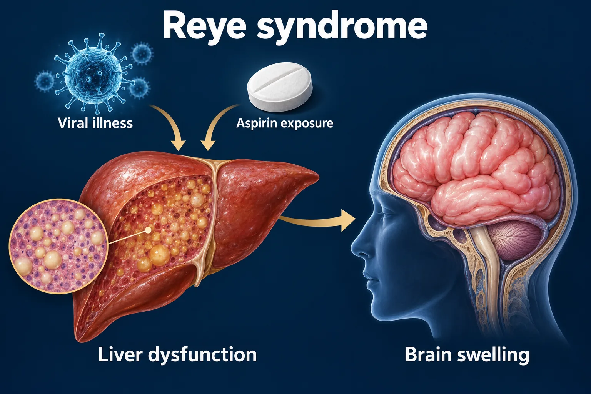

ABSN STUDY HUB · VISUAL STUDY CARD
Reye syndrome

Course labels and notes from the original graphic, arranged into readable sections. The illustration is schematic.
Course overview
REYE SYNDROME — WHY CHILDREN DO NOT GET ASPIRIN
A viral illness plus aspirin, then the liver and the brain swell together. It is preventable.
🚨 Ask about aspirin in any child with a virus who starts vomiting and will not stop. That question is the diagnosis.
THE CHAIN
THE CHAIN
🦠
Viral illness
flu or chickenpox
ASA
Aspirin given
for the fever
Mitochondria fail
ammonia builds up
Fatty liver
AST, ALT, ammonia ↑
Brain swells
cerebral odema
⭐ HOW IT SHOWS UP — IN THIS ORDER
⭐ HOW IT SHOWS UP — IN THIS ORDER
Stage I
Relentless vomiting, lethargy
Stage II
Confusion, combative, hyperventilating
Stage III
Unresponsive, decorticate posturing
Stage IV
Decerebrate, fixed pupils, coma
The vomiting that will not stop is the early flag.
✅ THE RULE
✅ THE RULE
No aspirin under 19
Acetaminophen or ibuprofen instead. Check labels — Pepto-Bismol has salicylate. Kawasaki disease is the one exception, and only with a specialist directing it.